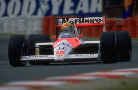

| Inicio | Ayrton |

El McLaren MP4/4 es considerado uno de los autos más dominantes en la historia de la Fórmula 1. Diseñado para la temporada 1988, fue conducido por Ayrton Senna y Alain Prost, logrando 15 victorias en 16 carreras, un récord impresionante.
Motor: Honda RA168E V6 turboalimentado.
Chasis: Monocasco de fibra de carbono.
Suspensión: Pullrod en la parte delantera y pushrod en la trasera.
Transmisión: Caja de cambios manual de 6 velocidades Weismann.
Neumáticos: Goodyear.
Peso: 540 kg.
Dimensiones: Largo: 4394 mm, Ancho: 2134 mm, Alto: 940 mm.
El MP4/4 dominó la temporada 1988, asegurando el Campeonato de Constructores para McLaren y el Campeonato de Pilotos para Senna. Su diseño aerodinámico innovador permitió una posición de conducción más reclinada, mejorando la eficiencia y el rendimiento. La intensa rivalidad entre Senna y Prost quedó marcada en la historia, culminando en un dramático final en el Gran Premio de Japón, donde Senna aseguró su primer título mundial.
Este monoplaza sigue siendo un referente en la historia de la F1, con un porcentaje de victorias del 93.8%, el más alto registrado en una sola temporada. Su impacto en el automovilismo es innegable, y su legado perdura como símbolo de excelencia y dominio en la Fórmula 1.